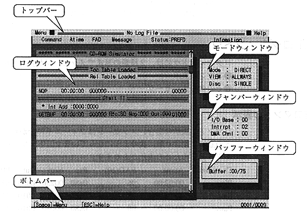

● Top bar
The top bar has two pull-down menus, "Menu" and "Help" ("Help" is not implemented). In the center, the log information file name specified when starting the virtual CD emulator is displayed. If no log information file is specified, "No LogFile" is displayed. Below that is a bar that shows where the information is displayed in the log window. This bar is usually purple, but it turns yellow when in LogView mode.
● Bottom bar
In the right corner, the number of lines of log information currently displayed is displayed against the total number of log information.
● Log window
A window colored in blue and light blue in the center of the screen. There is a scroll bar on the right to indicate the position of the currently displayed log information relative to the total number of log information.
● Mode window
The window at the top of the three on the right side of the screen. The following three modes are displayed.
-Virtual CD emulator mode
Direct .......... Direct DOS file access
Realtime ..... Real-time emulation
-Screen display mode
Always ..... Mode for displaying all log information
...... Error .......... Displays only error information (not implemented)
«Logview ..... Log information viewing mode
-CD speed
Single ......... Standard
Double ........ Double speed